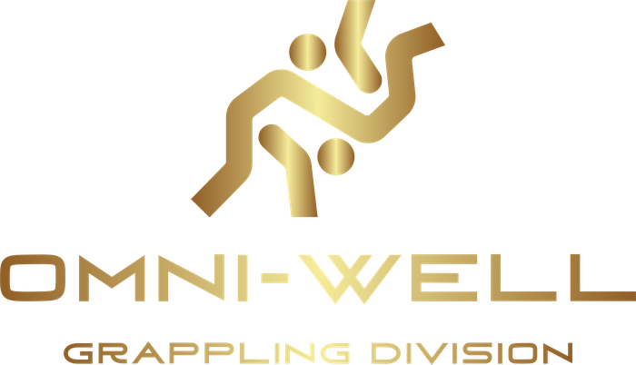
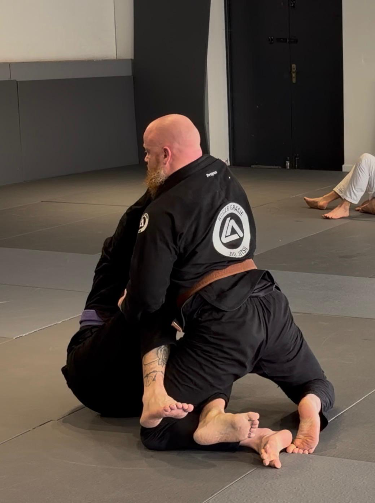
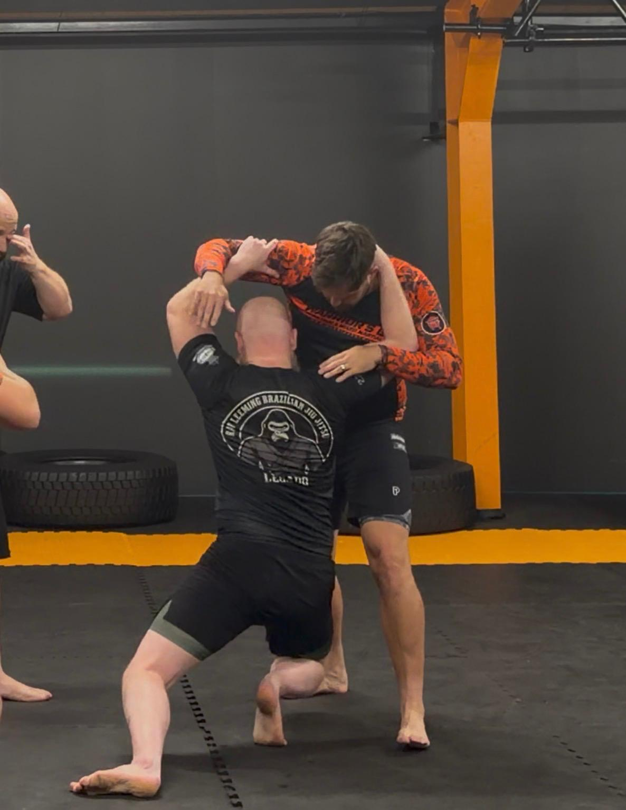

Omni-Well · Grappling Division
Develop your
grappling.
Technical coaching in gi and no-gi for beginners through to competitors.
Coaching enquiry

What I coach
Private and small-group instruction, technical development, competition preparation and athlete development.
I have competed internationally, coached since 2019 and trained BJJ since 2015.
Classes & locations
[Details to be confirmed] Enquire for current availability.
Private & small-group
[Pricing to be confirmed] Enquire for rates.
"Ste coached me for my first Brazilian Jiu Jitsu competition. With his training and guidance I won a spot on the podium."Ryan M · Google review
"Tailored his teaching style to suit me, and soon enough I was smashing through competitions."Sophie T · Google review